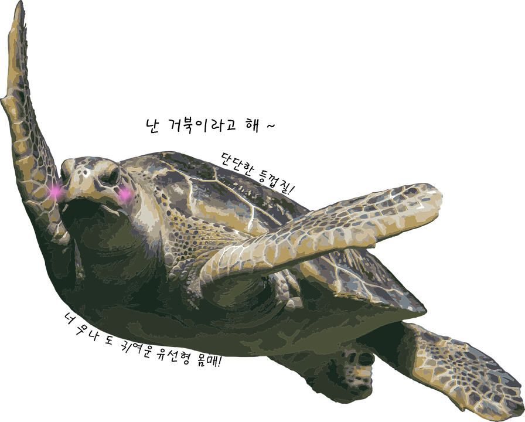

바다의 감초, 거북
거북(문화어: 거부기)
거북목에 속하는 파충류의 총칭.
가장 큰 종류로는 길이 250㎝,
무게는 800㎏를 넘기기도 해요.
방패와도 같은 단단한 등껍질과
어딜봐도 귀여운 몸매를 가진
매력넘치는 거북!
거북이의 세계로
여러분을 초대합니다!
로그인 하기
|
회원가입 하기

거북이란?
거북의 다양한 종류
거북의 세계 분포도
더 많은 정보
진행중인 이벤트
종료된 이벤트